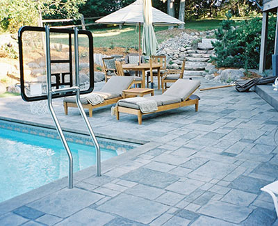
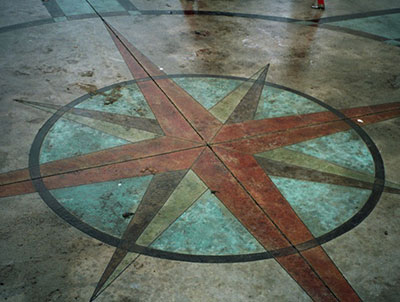

With over 35 years of experience, Lowell Russell Concrete, a family-owned company, continues to be a leader in modern concrete design and installation. Serving St Paul, Minnesota, we have continually been recognized by the Twin Cities area Better Business Bureau and Angie’s List as offering excellent customer satisfaction. The modern techniques and equipment we utilize help to continually expand our knowledge and expertise. Because of our dedication, we offer the highest quality exterior and interior concrete products and services available.
Exterior Concrete St Paul
For years, concrete has earned a reputation as a strong and durable material for everything from patios to driveways and sidewalks. Rightfully so. A well-formulated and properly placed concrete patio can last for many years and look nearly identical to when it was poured. Unfortunately, in the past, when people hear “Concrete” they conjure images of your typical gray slab. And although sometimes that’s exactly what you want, it can be so much more. Concrete can be more than durable. Concrete can be beautiful. It can be a statement.
{kind=link}
In the past, people were forced to use expensive natural stone as there was no other alternative that can match the required strength and aesthetic look they needed for their home. Today, concrete frees homeowners from having to use high end materials alone. Concrete offers a low-cost alternative that is perfect for large areas such as patios, driveways, steps, walkways and pools. Not only does concrete offer thousands of dollars in savings but it can also create a more beautiful product, one that is completely customizable in order to complement the existing aesthetic of the home. The durability of concrete makes it the perfect option for homeowners in the long term. It requires little maintenance and upkeep and lasts for decades if cared for correctly. Concrete offers decorative designs, borders and colors that seemingly were reserved only for natural stone or brick but is now readily available at a fraction of the cost. With concrete you will be able to create the perfect curb appeal you’ve always wanted while also adding tremendous value to your property.
Why is concrete so versatile? Concrete can be shaped into any form whatsoever. It can be colored to look antiquated in order to produce an “aged” look or mimic any natural material available like marble, brick or granite. There is almost no limit to what concrete is capable of. If correctly prepared and finished using industry accepted methods, your concrete can last you decades and can possibly last longer and look better longer than any natural material. Due to this intrinsic characteristic, concrete can be used in virtually any home project your heart desires. Its natural strength complemented with its beauty makes it the premiere construction material today.
Get a Free Estimate >
Concrete Patio St Paul
Your concrete patio should be open and inviting. At Lowell Russell Concrete we can assist you in making your concrete patio space in St Paul be both. Your ideas and our know-how can create a space great for entertaining guests and also your sanctuary from the stresses of your life. We know that your project is unique, challenging and important; because of that, we would like to offer our help. Please contact a professional from Lowell Russell Concrete, a Minnesota based family owned business, to find out how our services can to create a patio where you can enjoy what you have helped to create.
No home is complete without a patio in the backyard. Patios are embedded deeply into our way of life, as this area of the home is where you enjoy your weekend barbecues and host friends and family. As such, you want to have the best material for this part of your home. In the past, wood decks became popular due to the drab nature of concrete. However, homeowners who installed wood decks ended up replacing them as they often rotted or warped. Today, concrete is no longer the drab material it used to be as it can now mimic any natural stone or brick and even wood without the obvious shortcomings and cost these materials often incur.
Concrete Pool St Paul
Very few investments make a statement like a concrete pool. Indoor or outdoor, your St Paul pool area should be uniquely your own. Make it happen with Lowell Russell’s stamped concrete and border designs. Your investment is worth too much to not use the best. We know that your concrete pool project is unique, challenging and important; because of that, we would like to offer our help. Please contact a professional from Lowell Russell Concrete, a St Paul, Minnesota based business, to find out how our services can to create a pool area that will not only look great but will be durable for years to come.
Concrete pools are highly customizable and puts you in control of whatever design you like based on the topography of your property. It not only allows you the design freedom to think of whatever shape you want it to be but it also gives you the flexibility you need to design a swimming pool that can match the current theme and décor of your backyard and home. Compare that to a fiberglass pool, which is already pre-made in one piece and only comes with a limited availability of colors. If you have a concrete pool you can get the tiles you want in order to add color and personality for this area of your home. You can also easily match it with the tiles of your patio as well as the surfaces of the swimming deck.
Concrete Driveway St Paul
Your driveway is your home’s first impression. Lowell Russell Concrete understands that. We can create a high quality concrete driveway in St Paul that is not only functional but visually appealing. The driveway tells a lot about who you are as a homeowner and a neighbor. The driveway serves as the red carpet for you and your visitors and as such should look the best in every way possible. Lowell Russell Concrete understands that. We can create a high quality concrete driveway that is not only functional but visually appealing. Among the different construction materials, nothing shows better all-around purposefulness than concrete. It provides excellent overall appeal, low maintenance and a price that is truly value for money. Concrete has been providing headache-free service to homeowners for a very long time. It is an durable material that can last 30 years without any major rehabilitation work. From the curb to your garage, a beautifully installed concrete driveway not only can provide the visual satisfaction you need but also an enduring quality and value to your home as well. Please contact a professional from Lowell Russell Concrete to find out how our services can to create a concrete driveway that is unique, artistic and above all durable…even in Minnesota’s extreme weather.
Concrete for your driveway is not only functional but also lends itself to an array of design possibilities to make your home truly spectacular. Modern concrete methods can create a dramatic effect to you landscape and increase your property value immensely. Aside from the traditional look, concrete’s decorative nature can give your driveway the look and feel of brick, stone, slate and tile.
Get a Free Estimate >
Concrete Steps St Paul
Whether straight, round, steep or stretched, Lowell Russell Concrete can create high quality, cost effective concrete steps that do more than just make a path to your front door. Create an entrance to your home or business that makes the walk up both impressive and inviting. We know that your project is unique, challenging and important; because of that, we would like to offer our help. Please contact a professional from Lowell Russell Concrete, based in Lakeville, Minnesota, to find out how our services can assist you in making your concrete steps reflect your style.
There is no doubt that steps are considered the most prominent feature of any entryway be it in homes or commercial establishments. However, they are mostly neglected in favor of their utilitarian usage. By transforming your concrete steps from drab to beauty you can create a dramatic focal point to the entryway of your home. You can even achieve better visual impact through the combination of decorative concrete like stamped or stained methods to your concrete walkways to make them standout.
Concrete Walkways & Sidewalks St Paul
Walkways and sidewalks not only serve a practical function of allowing guests a path to the house but also evoke a sense of beauty and drama to the property if done right. Concrete is one of the most versatile materials around and it can literally be made to look like any natural stone available to man at a fraction of the cost. Concrete sidewalks and walkways can conjure a romantic moment, a prelude to what lies at the end of the path. It can trigger the imagination of anyone passing through on his or her way to the door.
Stamped Concrete Sidewalks and Walkways
This decorative concrete method is one of the most popular surface treatments for your concrete walkways and sidewalks and there is good reason for this because there is an almost endless array of pattern choices for you to choose from. You can get something traditional like slate, flagstone or brick or you can also get customized patterns like wood planking and even patterns inspired from nature or wildlife themes. The patterns and colors may be selected in order to gel with other existing hardscaping elements in the property. There is also an option to mix and match your decorative concrete options such as using stamped concrete with exposed aggregate finishes and even chemical staining to get that added effect.
Interior Concrete St Paul
Lowell Russell Concrete of St Paul has engineered systems that allow the creation of beautiful and unique architectural concrete floors for new home construction or renovation projects.
{kind=link}
No interior flooring is as flexible and strong as concrete. Concrete floors can be as cozy as carpet. They can be as elegant as hardwood. And concrete will remain good looking long after those other materials have frayed or faded. When done right, concrete is stunning and durable and easy to clean and maintain. It should be the first option when you think of interior flooring.
Unique, colored variegated or translucent effects are achievable with chemical staining. Complementing the most up to date decor, individualistic theme or traditional design, Lowell Russell Concrete systems offer value with virtually limitless potential for design with remarkably diverse range of style applications. Materials such as terrazzo, slate, hardwood, or imported tile can be replicated on moderate budgets.
Select the Beautiful, Durable Alternative
Around the upper Midwest in retail locations, custom homes, businesses, restaurants, and themed environments, Lowell Russell Concrete engineered systems allow the addition of beautiful and unique architectural concrete floors in both new construction and renovation.
More and more people are discovering the “secret” to creating stunning and stylish floors and are now foregoing the traditional vinyl, carpet and hardwood flooring altogether in favor of concrete. The concrete floor of today is a far cry from the dull and dull industrial looking floors of years past. You will see and appreciate a range of colors, textures and stains that you never thought possible. Due to the latest modern technology, one can even appreciate the classic grey concrete floor, which was once considered uninteresting, but with modern methods can look absolutely stunning provided the right surface prep and finishing is done.
Unique, colored variegated or translucent effects are achievable with chemical staining. Complementing the most contemporary decor, individualistic theme or traditional design, Lowell Russell Concrete systems offer value with virtually limitless potential for design with remarkably diverse range of style applications. Materials such as terrazzo, slate, hardwood, or imported tile can be replicated on moderate budgets.
Get a Free Estimate >
Concrete Floor St Paul
Concrete is the new building material of choice for home designers and owners throughout the world. Because concrete floors can be stained, colored, painted, and personalized, they are universally popping up in business and home décor. Nearly limitless in design, color and texture, a concrete floor in St Paul offers numerous options for exterior and interior areas.
Currently, the most common place you’ll find decorative concrete is under your feet. Whether it’s acid-stained, painted, created with overlays, stencils, radiant floors, you’re your unique personal floor, concrete floors offer design and functionality unlike any other material. Concrete flooring, often referred to as cement flooring, does not need to be boring and gray. Modern techniques can bring new life to this traditional substrate.
There is already a lot of good stuff that has been said about concrete and for good reason too. Concrete in itself is equal parts sturdy and sleek, not to mention quite easy to maintain. It is therefore the best choice of material to use on your floors. Here are some of the great benefits to concrete floors.
Concrete Staining St Paul
Concrete is a blank canvas and the stain is the hue that can transform it from a simple gray color to stunning shades that can make your home truly beautiful and inviting. Concrete staining is the perfect means to impart an opulent richness that is not achievable from any other method. As opposed to producing a single opaque effect like what you would normally see in paint, staining the concrete allows it to infuse deep into the mix so as to create vibrant translucent colors that vary depending on the surface they are applied to as well as the method used. What you get is a concrete wall, floor or slab that can look like anything from natural stone, brick and even wood if you want it to be.
Chemstaining is a ready to use, penetrating acidic stain that chemically reacts with cured concrete to produce permanent, variegated or translucent effects. Chemical Staining allows for more creative and artistic designs to be possible. They can be used to simulate other products; such as tile, wood, and stone; and create original designs never before imagined with concrete. It brings the durability and strength of concrete to table, countertops, entryways, and decks which concrete would usually not be a consideration. The flexibility to give a new look to old concrete without the major undertaking of the tear out.
Concrete Countertops St Paul
There is no better material out there today that features unparalleled durability, adaptability and overall cost-effectiveness than concrete. This is the reason why concrete countertops are making waves in just about anything related to interior design. Concrete countertops can transform your kitchen from drab to fab through the application of coloring and staining methods. It is a sure fire way to infuse your home with a rustic but modern look that is not only trendy but clean at the same time.
Concrete countertops can be customized into any shape in order to fit any kitchen configuration. No matter how big or small your space is, we can create a countertop perfect for you. Concrete is also very resistant to scratching and is not affected by heat. It is easy to clean and maintain. All you need to do is ensure that regular sealing is done.
Since most concrete countertops are made from scratch, there are a variety of options for you to choose from when it comes to the finish. You can get mirror-smooth or stone-like textures depending on your preference. In some instances, the surface of the form itself becomes the finish, as the texture is replicated in the concrete itself. Troweling the concrete surface can create original hand-made textural effects while polishing or sanding the concrete after it has been cast can result in an ultra-smooth and perfect surface. Polishing methods may also be done in order to expose the aggregate, stone or glass within in order to establish the terrazzo look.
Get a Free Estimate >
Concrete Stencils St Paul
Since their introduction in the 1980s, concrete stencils became all the rage as they quickly and efficiently replicated the look of hand-laid brick over a newly poured concrete surface. In those days only one stencil pattern was available but today there is an endless array of patterns for you to choose from ranging from brick, tile, cobblestone, slate and flagstone to customized concrete stencils that create the look of lush looking carpets for your floors.
Concrete Stencils Are Excellent Alternative to Stamping
Concrete stencils offer an excellent alternative to concrete stamping as stenciling is quicker to do and can be done using long-handed tools. The pattern comes courtesy of the stencils and the texturing is achieved using lightweight textured rollers. Unlike stamping, that requires you to go on the slab, check to see if it can bear your weight and then apply the stamp by hand, with stenciling there is no need for all of that. Depending on the weather, concrete may set in fairly quickly and there is a limited window for it to be textured adequately, concrete stencils solves that problem because the process can start as soon as the concrete is installed and may even be don before the concrete is good enough for the stamping process to start.